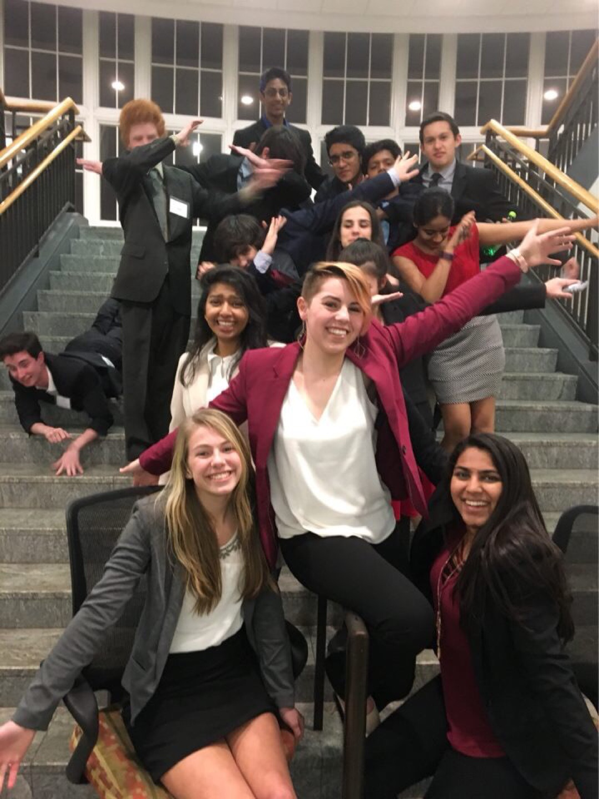

Model United Nations, also known as MUN, is a public speaking, foreign relations, and descriptive writing events where you act as a country and propose resolutions, speak in front of a dias, and work together with other countries in order to solve real world issues, similar to the actual United Nations.